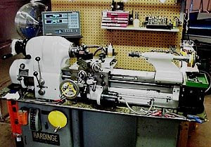
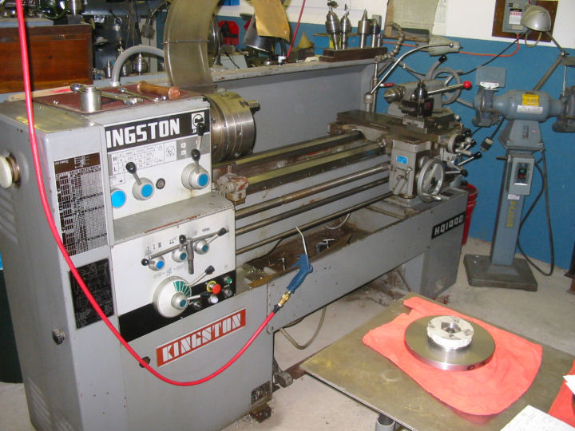
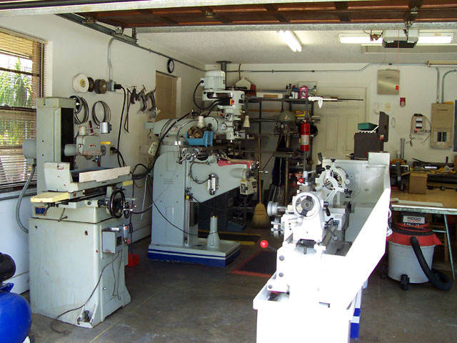

Home
Machine Shop Hall of Fame
I've collected
these photos and short bios of home machine shops that I was really impressed
by. Hopefully the owners enjoy the hero worship!
Note that
there are many more great home machinists I list on my web
links page. It isn't that those on this page are better machinists,
but rather that they presented their workshops and it is those shops that
really appealed to me. Some of the great machinists never show a photo
of a shop, so it would be hard to credit them here. I wish someone would
publish a coffee table book about great home machine shops, similar to the Ultimate Garages book which
I enjoyed so much.
The Ultimate Tony Stark Inspired Workshop
|
Think of it as Fantasy Football League for Workshops. What would you build given unlimited time and resources? |
5
Bears Research
An extremely well produced
site that details a series of engines, as well as building a CNC mill
from scratch. This gentleman is evidently an airline pilot. His projects
are outrageous in terms of their scope and execution. He achieves the
levels of precision necessary to build model turboprop and turbojet engines,
not to mention building the CNC mill. I'll probably never get there. Without further ado, here is his home machine shop:
 |
Hardinge
model HLV-B lathe, fitted with an Acu-Rite DRO. He rebuilt this lathe
himself. It certainly is a much more graceful and attractive piece
of machinery than the average Taiwanese unit one sees so often. |
|
Mill is
an ENCO model 1525. It's a miniature knee (Bridgeport) mill, with
a table size of 8" x 36". He really likes the quality of
it, and has equipped it with DRO. |
|
Completely
designed and built from scratch. Just an amazing project. Not sure
what it's capacities and specs are, but from the photos and comments,
it is probably first rate. I think it's interesting he wants to have
both a CNC and conventional mill. |
The
Engineman
This gentleman builds the
most exquisite little engines, and in addition, he seems to take great
joy in upgrading both the functions and aesthetics of all his machine
tools. He may start with some imports, but by the time he is done, they're
jeweled masterpieces.
Workshop:
You couldn't ask for a neater shop!
|
The Taig lathe is said
to be The Engineman's most used machine. As you can see, he has made
a number of enhancements to it which include a 60 hole dividing plate,
leather way wipers, a Unimat-style threading attachment, a homemade
leadscrew gearbox, a travelling steady, a tailstock die holder, and
a full set of ball handles. |
|
7 x 10" Asian
Minilathe. Not a replacement for the Taig, but an augmentation. Refinished,
equipped with Taig 4-jaw chuck, ball handles, protractor scale on
compound slide, graduated tailstock ram, an adjustable carriage stop
and a carriage lock, a headstock spindle crank, a sensitive drilling
tailstock attachment, lathe bed wipers, a universal thread dial indicator,
and a ball-bearing steady rest! |
|
The Engineman uses
a Taig mill. Interestingly, it is a recent acquisition. Before 2004,
his work was exclusively done on his lathes, using a vertical milling
attachment and chucking the milling cutters into the lathe spindle.
As mentioned, he customizes his machines. You can see above the spindle
his "Quick Drilling Attachment" for example. It's mounted
on a painted piece of 3/4" MDF board. There's a lot of other
tooling he made or uses that is discussed on his site. |
HomeCNC
This gentleman has converted
a round column mill-drill to CNC with great results. You can buy his plans
and servomotors. One of the best sites on CNC conversion I've found.
Workshop:
|
Before and after pictures
of the Enco Mill and it's CNC conversion. |
|
An Enco 9x20 lathe. |
Micro-Machine
Very meticulously upgraded
machines here. DRO seemed to be the first order of business, followed
by a number of other improvements.
Workshop:
|
Rong-Fu
RF-25 equipped with DRO (Digital Readout). The z is set to give tachometer
speed of spindle. Note the modified digital caliper to provide a Z
DRO. Nice setup. Powerfeed on X is at left. |
|
Jet 9x20
lathe with Shumatech DRO. Z-axis (bottom) is spindle tachometer. |
Dalziel
Toolworks
A completely impeccable
shop in the way that only an English Woodworker can do. The finish carpenter
on my house was a fantastic woodworker
and once remarked to me, "There is nothing so perfect as the mind
of an Englishman." Dalziel is currently engaged in converting his
small knee mill to CNC.
Cecil Walker
How about a "home shop"
that looks just like a "pro shop"? This gent has assembled a
fine collection of classic American machine tools and uses them for gunsmithing
and restoration of old engines:
The essentials: a mill, lathe, and shaper
|
Surface grinder, mill, parts storage, and cool pumps and
sign
|
Bandsaw, toolboxes, Miller weldy, oxy rig, collets, and
sand blaster, Oh My!
|
Neat desk area for working on plans and checking books
|
|
|

Air cooled and water cooled Browning's with their own transfer
case!
|
Home
Shop Machinist
I've included this elegant
shop because it shows just how much can be done in a very small area.
All of the essentials are here complete with a nice woodsy view:
Agertool:
A Small Production Shop
The Shop
Lathe #1: Note tooling storage on splash gaurd...
3 Wise Mills...

Another lathe...
Pair O' Surface Grinders...
Material Storage and Sawing Area...
The Fidgiting
Widgitmaster
Widgitmaster contributes
to several of the boards regularly and also sells some of the things he
makes on eBay. His home shop is very clean and well organized:

Mill, lathe, and surface grinder. It's all there! Lathe is a Birmingham YCL-1440 I believe...
Update: Now with divider partition and more tool storage!
Tipsy's
Woodworking cum Metalworking Shop and Fabulous Monarch 10EE Lathe
The Woodworking End...
Love the Big Bench and Handy Fridge!
Nice Welding Table With Everything Underneath. Not
Sure About a Wooden Welding Table Though...
Da Mill. Huge Vise!
Shot of the Metalworking Area...
Love the Monarch!
One Last Monarch Shot...
RKepler's
Garage Stall in Heaven
A panorama stitched together to show Russ Kepler's
shop in a garage stall. Makes it look very spacious! Also another Monarch
10EE man...
Russ sent me
a note with a few details. The shop occupies 3/4 of a 3 car garage, with
shelving being about 6 feet of the space. The wife's car still fits in
(Aye, and he's a wise man for making it so too, eh?). There's an Atlas
12x36, the Monarch 10EE (rebuilt, he mogliced the ways and put Turcite
on the cross slide, replaced worn parts, all took 9 months), a Lagun FT2
(Bridgeport on steroids, 10x50 table), Atlas shaper & mill both working
but seldom used, Delta surface grinder, and a bunch of support equipment.
Russ indicates it's all in support of his hobby projects which include
fun stuff like model stean engines of which he's made more than a dozen.
All in all, an awesoem shop.
Russ Kepler's Monarch 10EE Before and After Shots:
These are such cool lathes!
Here's what Russ builds in the shop: Great steam
engine models...
DBMachine's
Jib Cranes O'Plenty!
Every major
machine tool has a jib crane near it, making for a total of 5 jib cranes
in all. The organization is impeccable, and there are both manual and
CNC machines.
Jib crane along top right, FADAL mill on left...
Neat organization abounds...
Pair O' Manual Mills, Power Feeds on Axes, DRO's,
and Parts Drawers in Back...
Nice CNC Lathe. Already squared blocks on lower
right?
Very well organized welding area...
Precision grinding area...
Community College
Shop
Love the workcenter and hanging air lines...
Mill tooling cart on right is nice too...
Monster
Gravy's Well-Organized One Stall Garage Shop
Lots of storage crammed into a small space. Maple
block surface is nice!
The Metrology Area. Note the Mill Tooling Rack at
top right (Attached to Mill)...
Moving out a lathe to make more room. Trash can
is on 2 wheeler to make it easier to haul out a bucket o'chips...
Haas Mini Mill is a new addition to the family.
Love the forklift!
Great Home Shops,
Page 2